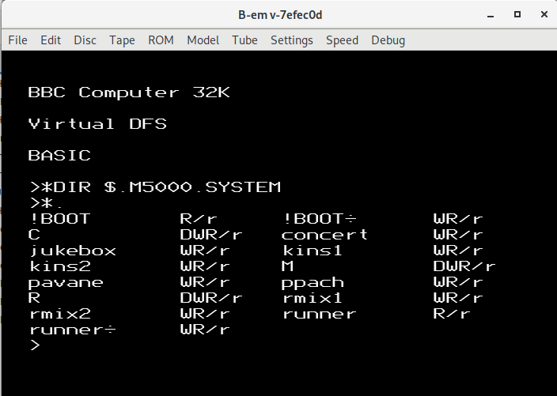
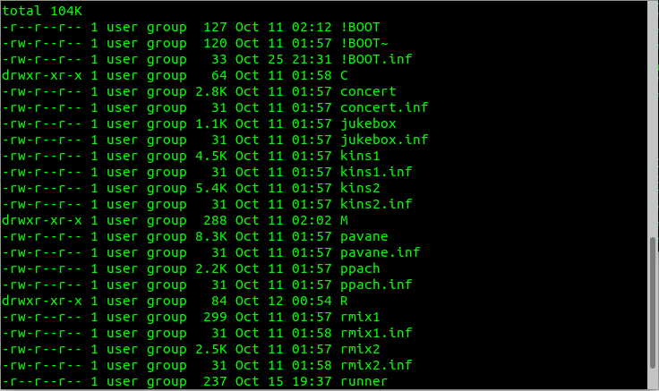

VDFS is an emulator-specific filing system for the BBC Micro that allows access to a subset of the filesystem of the host, i.e. the PC running the emulator. The concept is very similar to the way in which modern virtual machine software such as VirtualBox allows the guest to view parts of the host filesystem as if it were a network drive, though the implementation is rather different.
In use it is very similar to ADFS, because this is the most natural way to map the host filesystem which will be hierarchical, but with a little of NFS. It is not aimed at proving a completely authentic experience and there are no noises, no speed restrictions and no emulation of DFS-specfic rather than generalised filing system behaviour. Where it is most useful is in being able to share files fast between the host and the guest, for example when developing software on the guest where the editor or some other part of the toolchain runs on the host and then the software needs to run on the guest BBC for testing, possibly with one or more toolchain steps on the guest before that.
The VDFS concept started life on a BBC emulator running under RiscOS. There are two implementations I am aware of for PC-based emulators: the one I wrote for B-Em, which the rest of this documentation is about, and another one for BeebEm by J.G. Harston.
Two things are required to be able to use VDFS in B-Em:
The VDFS ROM is supplied as part of B-Em in
roms/general/vdfs.rom. This ROM is included in the
default machine configurations but if you have configured a
custom machine, or have removed it, then you would need to add
it. For basic use, there is no requirement for it to occupy any
particular slot, though on machines other than the master the
slot will determine whether it can become the default filing
system at startup or will need to be selected explicitly.
The setting for VDFS is under the "Disc" menu. When this is ticked, VDFS is enabled:

For secutity reasons, VDFS does not allow the whole filsystem on the host to be seen from the guest. Instead one chooses a specific directory on the host that will then become the virtual root directory on the guest. This means the guest (BBC Micro) can see anything in that directory of any sub-directory thereof but not anything above that level.
This VDFS root directory is specified either by setting the environment variable BEM_VDFS_ROOT before starting b-em or by choosing "Choose VDFS Root" from the Disc menu which will then present a file chooser dialogue configured to select a directory rather than a file.
When enabled, as above, VDFS is a candidate for selection on startup as the default filing system. Whether this happens depends on the order of the ROMs in the slots and on whether keys are held down during startup. VDFS will be selected when it is either the highest priority filing system selected and no keys are held down, or when the 'S' key is held down.
On the master, the default filing system can be configured as one of the CMOS settings. The syntax is:
*CONFIGURE FILE <n>
where <n> n is the number of the ROM containing the filing system.
If enabled in the settings, VDFS can always be selected with the command:
*VDFS
or by issusing a ROM service call with A=&12 and Y=&11, with &11 being the filing system number normally used by VDFS.
Depending on which priority slot the VDFS ROM is in and the FSCLAIM setting, VDFS may also be selected by commands and service calls that would otherwise select the DFS or ADFS filing systems. This is to enable VDFS to be used with programs which embed either commands or service calls to start these other filing systems without having to patch the programs concerned.
In order to step in in place of another filing system in this way, the VDFS ROM needs to be in a higher priority ROM slot than the filing system concerned so that the VDFS ROM sees the command or service call first.
Assuming this is the case, after executing:
*FSCLAIM ON
VDFS will be selected when any of:
*DFS
*ADFS
*FADFS
*VDFS
are executed or when the ROM service call with A=&12 is issued with Y=&04, Y=&08 or Y=&11. After executing:
*FSCLAIM OFF
VDFS will only be selected with:
*VDFS
or by issusing a ROM service call with A=&12 and Y=&11.
VDFS implements the complete set of filing system calls including OSGBPB so should work from existing programs like any other filing system, provided the program does not make assumptions about the directory structure.
It is worth noting that, as well as embedding filing system selection commands as noted above, some programs may change their behaviour according to the number of the filing system selected. The BCPL ROM is a case in point which, if it does not recognise the filing system, assumes it only implements the core filing system calls as implemented by the cassette and ROM filing systems. Unfortunately the latest filing system this ROM knows about is DFS and this can make it very slow on more modern filing systems. This could be addressed via *FSCLAIM above as that causes VDFS to report as having the filing system number of the filing system it is standing in for. In that case you would have VDFS stand in for DFS by doing:
*FSCLAIM ON
*DISC
Another solution is to patch the BCPL ROM and a patched version is available in the fstest.zip file attached to this forum post.
The following commands are implemented by VDFS:
*BACK
*CAT
*CDIR
*DELETE
*DIR
*EX/kbd>
*INFO/kbd>
*RENAME
*RESCAN
All of these have the same meaning as under ADFS except for RESCAN which is VDFS-specific and can be used to force VDFS to re-scan host directories if it has not picked up changes made directly on the host.
The following commands are recognised but do nothing:
*ACCESS
*BACKUP
*COMPACT
*COPY
*DESTROY
*DRIVE
*ENABLE
*FORM
*FREE
*MAP
*MOUNT
*TITLE
*VERIFY
*WIPE
VDFS supplies attributes to programs and displays them in the catalogue in the form used for NFS. In the catalogue display this means those that apply to the current user are in capitals and those that apply to others are in lower case. For example here is a directory set up to look like the system disc for a Music 5000 system:
and here is the same directory display on a Linux host:
The NFS "current user" attributes are taken from the host file permissions that apply to the user running the emulator. The NFS "public" permissions are a composite - if anyone else on the host system is able to perform the action concerned however they get that permission, the NFS permission is considered to be granted, so in the case of Linux this includes permissions obtained via the group mechanism.
As noted above the *ACCESS command does not do anything on VDFS and neither does the OSFILE call to set file attributes. It is simply not clear how this operation should be translated to work on the host system and would differ between Windows and Linux. If you need to change file permissions you will need to do it on the host.
The Acorn-specific LOAD and EXEC addresses are supported - these are held in .inf files on the host, one for each real file, visible in the image above. These are intended to be compatible with SWH's beeb and Acorn-aware ZIP archivers.
Acorn filenames are limited to 10 characters so host filenames longer than this are truncated before being presented to code running on the emulated BBC micro. Also, the set of characters that can be included in Acorn filenames and the set of characters that have special meanings will be different from those on the host. Looking at these two rows of characters:
# $ % & . ? @ ^
? < ; + / # = >
whenever one of the characters in the top row is found in a host filename it is translated to the corresponding one on the bottom row. If the combination of truncation and/or mapping would result in more than one host file appearing to have the same name to the guest this is resolved by adding a ~ character and a numeric suffix, truncating the name further, if necessary, to make room for the suffix. This is modelled after the way Windows deals with multiple long filenames mapping to the same 8.3 filename.
In the reverse direction, VDFS will remember the guest name it gave to each host file, though only while B-Em continues to run, so adding or removing files should not cause the mapping to become unstable. When VDFS sees a new guest name, for example when creating a new file, it performs the mapping in reverse, i.e. any character on the bottom row is translated to the corresponding character on the top row before the file is created on the host.
VDFS is implemented through co-operation between a service ROM that runs from within the guest BBC micro and a module within the emulator, vdfs.c.
The ROM receives requests from the BBC Micro MOS or user programs via the normal paged ROM service calls and by setting the filing system vectors to point to routines within this ROM when it is selected as the current filing system. As necessary, control is then passed to the emulator module.
In the original RiscOS emulator, the mechanism by which control was transferred was an undocumented 6502 instruction, i.e. the ROM would use this instruction and the processor emulator would trap to the emulator module when it went to execute this instruction. In B-Em some effort has been put into make the emulated 6502 behave as close to a real one as possible and that includes executing undocumented insructions as a real CPU would. B-Em therefore takes a slighly different approach and uses a set of four ports in the JIM (1Mhz bus) area starting at &FC5C.
In version 5 of VDFS, the current master version, this is simply a boolean flag which corresponds to the FSCLAIM setting, i.e. whether VDFS should initialise itself when a command or service call attempts to select ADFS or DFS.
In version 6 of VDFS this will enable individual selection or whether VDFS claims ADFS and/or DFS with bit 7 (&80) meaning claim ADFS and bit 6 (&40) meaning claim DFS
When VDFS is the current filing system, this is set to the filing system number that caused it to initialise, i.e. if this is not &11, VDFS usual filing system number, this is the number of the filing system VDFS is pretending to be. When VDFS is not the current filing system this is zero.
Stroring a value in this port causes the vdfs.c module to take some action. The values as used for VDFS version 5 are:
| Code | Action |
|---|---|
| &00 | OSFSC |
| &01 | OSFIND |
| &02 | OSGBPB |
| &03 | OSBPUT |
| &04 | OSBGET |
| &05 | OSARGS |
| &06 | OSFILE |
| &10 | Prepare for *CAT. |
| &11 | Close all open files. |
| &40 | VDFS-specific OSWORD |
| &D0 | *SRLOAD command |
| &D1 | *SRWRITE command |
| &D2 | Execute SWRAM <> filing system OSWWORD. |
| &D3 | *SRSAVE |
| &D4 | *SRREAD |
| &D5 | *BACK |
| &D6 | *DIR |
| &D7 | *LIB |
| &D8 | *RESCAN |
| &FD | Check for sideways RAM in specified bank. |
| &FE | Check if VDFS is enabled. |
| &FF | *QUIT - Request emulator to exit. |
In VDFS 6 this changes to:
| Code | Action |
|---|---|
| &00 | ROM Service |
| &01 | OSFILE |
| &02 | OSARGS |
| &03 | OSBGET |
| &04 | OSBPUT |
| &05 | OSGBPB |
| &06 | OSFIND |
| &07 | OSFSC |
| &08 | Get details of next file in catalogue./td> |
| &09 | Check for sideways RAM in specified bank. |
There are fewer command codes for VDFS 6 because the new code for ROM sevice call means more functions are implemented in the vdfs.c module and less in the ROM. In particular OS command parsing is now in vdfs.c so there is no need for a separate command code for each command.
VDFS version 6 also adds a mechanism to transfer control in the other direction. Normally, when the command port is written to the corresponding action is carried out and the emulated 6502 continues from the next instruction. With VDFS 6 the vdfs.c module may instead set the PC for the emulated CPU to some other address within the ROM to continue execution there and to do so uses a table of addresses wthin the ROM. The first three bytes of the VDFS ROM, where the language entry would be if it were a language ROM, describe this table with the first byte at &8000 being the number of enties and thd next two at &8001 and &8002 pointing to the first entry. At the time of writing the correspondance between internal vdfs.c action codes, table entries and the associated assenmbler routine in the ROM are as follows:
| Code in vdfs.c | Number | Assembler Label | Desription |
|---|---|---|---|
| VDFS_ROM_RETURN | &00 | serv_done | Simply return (execute RTS) |
| VDFS_ROM_FSSTART | &01 | fsstart | Start VDFS when selected by command or ROM service call |
| VDFS_ROM_FSBOOT | &02 | fsboot | Start VDFS when selected at system startup. *EXEC a !BOOT file if found. |
| VDFS_ROM_FSINFO | &03 | fs_info | Provide filing system info to the OS on the master. |
| VDFS_ROM_FSCLAIM | &04 | fs_claim | Print a message saying which filing systems are claimed. |
| VDFS_ROM_CAT | &05 | dir_cat | Execute *CAT. |
| VDFS_ROM_EX | &06 | dir_ex | Execute *EX |
| VDFS_ROM_INFO | &07 | pr_all | Execute *INFO |
| VDFS_ROM_DUMP | &08 | cmd_dump | Execute *DUMP |
| VDFS_ROM_LIST | &09 | cmd_list | Execute *LIST |
| VDFS_ROM_PRINT | &0A | cmd_print | Execute *PRINT |
| VDFS_ROM_TYPE | &0B | cmd_type | Execute *PRiNT |
| VDFS_ROM_ROMS | &0C | cmd_roms | Execute *ROMS |
| VDFS_ROM_HELP_SHORT | &0D | help_short | Give short help, i.e. with no help key specified. |
| VDFS_ROM_HELP_ALL | &0E | help_all | Give long help, i.e. a single '.' specified. |
| VDFS_ROM_HELP_VDFS | &0F | help_vdfs | Give help when VDFS specified as help key. |
| VDFS_ROM_HELP_UTILS | &10 | help_utils | Give help when UTILS specified as help key. |
| VDFS_ROM_HELP_SRAM | &11 | help_sram | Give help when SRAM specified as help key. |
| VDFS_ROM_TUBE_EXEC | &12 | tube_exec | Start execution in the tube processor for *RUN etc. |
| VDFS_ROM_TUBE_INIT | &13 | tube_init | Initialise tube - ROM service call &FE |
| VDFS_ROM_TUBE_EXPL | &14 | tube_explode | Explode character set for tube - ROM service call &FF |
Unlike the scheme that used an undocumented instruction, writing to a port means one of the emulated processor's register has to be loaded with the value to write but some commands may need to pass values in all three 6502 registers to the routine in vdfs.c
This solves the problem by allowing the accumulator (A) to be written here, then loaded with the command code. As soon as the command code is written to &FC5E above the vdfs.c module puts the value that was written to this port back into A before dispatching to the routine that implements the command code concerned. This means a typical invocation of an action in vdfs.c looks like this in 6502 assembler:
sta port_a ; &FC5F lda #&01 sta port_cmd ; &FC5E rts